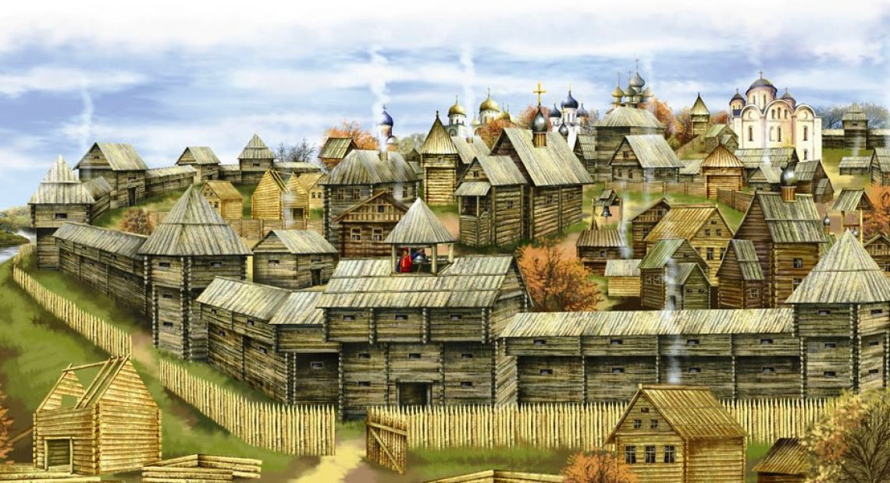

On the territory of modern Kyiv, man first appeared about 20,000 years ago
(the end of the ancient stone age). This is the famous Cyril's parking lot, which was
located in the northwestern part of the city.

According to legend, at the end of the 5th - the beginning of the 6th century.
AD three brothers Kiy, Shchek and Khoryv and their sister Lybid founded a city on the steep
right bank of the Dnipro River and named it Kiev in honor of their older brother.
Archeological research revealed dwellings and farm buildings of the "town of Kiya" dated V-VI
centuries on Starokyivska Gora. The date of the foundation of Kyiv is officially accepted - 482.
Polyans, Drevlians, Uglichians, Severians, Tyverians united around Ancient Kyiv,
and the city of Kyiv became a great political center of East Slavic tribes.

In 988, Prince Volodymyr introduced Christianity as the official religion
in Kievan Rus. This contributed to the establishment and development of political and cultural
ties with the Byzantine Empire, Bulgaria and other states of Europe and the Middle East

In the 11th century Kyiv becomes one of the most famous centers of civilization
in the Christian world. About 400 churches, 8 markets, more than 50,000 residents lived in the city.
In the early 11th century St. Sophia Cathedral was build by Yaroslav. It has 13 domes and was designed to rival Hagia Sophia in Constantinople.

In the 15th century Magdeburg law was granted to Kyiv.
Now all city affairs were managed by the magistrate. Magdeburg law gave Kyiv
much greater independence in matters of international trade. Colonies of Greeks, Armenians,
and Genoese appeared in the city; Turkish, Moscow, and Polish merchants had their yards.
A market square appeared in Podil, which became the main square of the city.

1 / 3

Caption Text
2 / 3

Caption Two
3 / 3

Caption Three